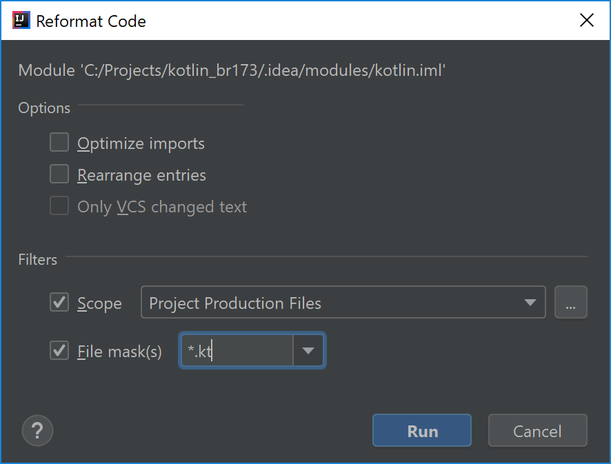

type: doc layout: reference category: Tools
title: "代码风格迁移指南"
代码风格迁移指南
Kotlin 编码规范与 IntelliJ IDEA 格式化程序
Kotlin 编码规范影响了编写地道 Kotlin 代码的几个方面，其中包括一组旨在提高 Kotlin 代码可读性的格式建议。
遗憾的是，IntelliJ IDEA 中内置的代码格式化工具在这篇文档发布很久之前就已经在使用了，并且现在具有默认设置，该默认设置产生的格式不同于现在建议格式。
接下来，通过改变 IntelliJ IDEA 中的默认设置并使格式与 Kotlin 编码规范一致来消除这种隔阂似乎是符合逻辑的。但这意味着所有现有 Kotlin 项目将在安装 Kotlin 插件后启用新的代码格式。这并不是插件更新的预期结果，对不对？
这就是为什么我们有以下迁移计划的原因：
- 从 Kotlin 1.3 开始，默认情况下启用官方代码格式，并且仅对新项目启用（旧风格可以手动启用）
- 现有项目的作者可以选择迁移到现有的 Kotlin 编码规范
- 现有项目的作者可以选择进行显式声明在项目中使用旧代码风格（这样，将来不会因改变默认值而影响项目）
- 切换到默认格式，使其与 Kotlin 1.4 中的 Kotlin 编码规范一致
“Kotlin 编码规范” 与 “IntelliJ IDEA 默认代码风格” 之间的差异
最显着的变化是延续缩进策略。使用双缩进来显示多行表达式尚未在前一行结束是一个好主意。这是一个非常简单且通用的规则，但是以这种方式格式化时，一些 Kotlin 构造看起来有些尴尬。在 Kotlin 编码规范中，建议在之前强制使用长延续缩进的场景中使用单个缩进

实际上，很多代码都会受到影响，因此可以将其视为重大的代码风格更新。
迁移到新的代码风格讨论
如果没有使用旧风格的代码，那么从新项目开始就采用新的代码风格应该是很自然的过程。因此，从 1.3 版开始，Kotlin IntelliJ 插件使用默认情况下启用的编码规范文档中的格式创建新项目。
在现有项目中更改格式是一项更加艰巨的任务，应该与团队讨论所有注意事项然后一起开始。
更改现有项目中的代码风格的主要缺点是，blame/annotate 版本控制系统特性将更频繁地指向无关的提交。尽管每种版本控制系统都有某种方式可以解决此问题（IntelliJ IDEA 中可以使用“Annotate Previous Revision”），但重要的是确定新风格是否值得所有努力。将修改格式的提交与有意义的更改分开的做法可以为以后的调查提供很大帮助。
对于大型团队来说，迁移也可能会比较困难，因为在多个子系统中提交大量文件可能会在个人的分支中产生合并冲突。 尽管每个冲突解决方案通常都很琐碎，但明智的做法是知道当前是否正在使用大型功能分支。
通常，对于小型项目，建议一次转换所有文件。
对于大中型项目，决定可能会很艰难。如果还没有准备好立即更新许多文件，则可以决定逐模块迁移，或者继续只对已修改文件逐步迁移。
迁移到新的代码风格
可以在 Settings → Editor → Code Style → Kotlin 对话框中切换 Kotlin 代码风格。
将 Scheme 切换到 Project 并从下方选择 Set from... → Predefined Style → Kotlin Style Guide。
为了向所有项目开发人员共享这些更改，必须将 .idea/codeStyle 文件夹提交给版本控制系统。
如果使用外部构建系统来配置项目，并且已决定不共享 .idea/codeStyle 文件夹，那么可以通过附加属性强制使用 Kotlin 编码规范：
在 Gradle 中
在项目根目录的 gradle.properties 文件中添加 kotlin.code.style=official 属性，并将其提交到版本控制系统。
在 Maven 中
在项目根目录的 pom.xml 文件中添加 kotlin.code.style official 属性。
<properties>
<kotlin.code.style>official</kotlin.code.style>
</properties>
警告： 设置 kotlin.code.style 选项可能会在项目导入期间修改代码风格方案，并且可能会更改代码风格设置。
更新代码风格设置后，在所需范围的项目视图中选择“Reformat Code”。

对于逐步迁移，可以启用“File is not formatted according to project settings”（文件未根据项目设置格式化）探查项。这将突出显示应修改格式的地方。启用“Apply only to modified files”（仅应用于修改后的文件）选项后，检查将仅在修改后的文件中显示格式问题。无论如何，此类文件应该尽快修改并提交。
在项目中存储旧的代码风格
随时可以将 IntelliJ IDEA 代码风格明确设置为项目的正确代码风格。为此，请在 Settings → Editor → Code Style → Kotlin 中将 Scheme 切换到 Project，然后在 Load/Save 选项卡中的 "Use defaults from:" 中选择 "Kotlin obsolete IntelliJ IDEA codestyle" 。
为了在项目开发人员的 .idea/codeStyle 文件夹中共享更改，必须将其提交给版本控制系统。另外， kotlin.code.style=obsolete 可以用于配置了 Gradle 或 Maven 的项目。